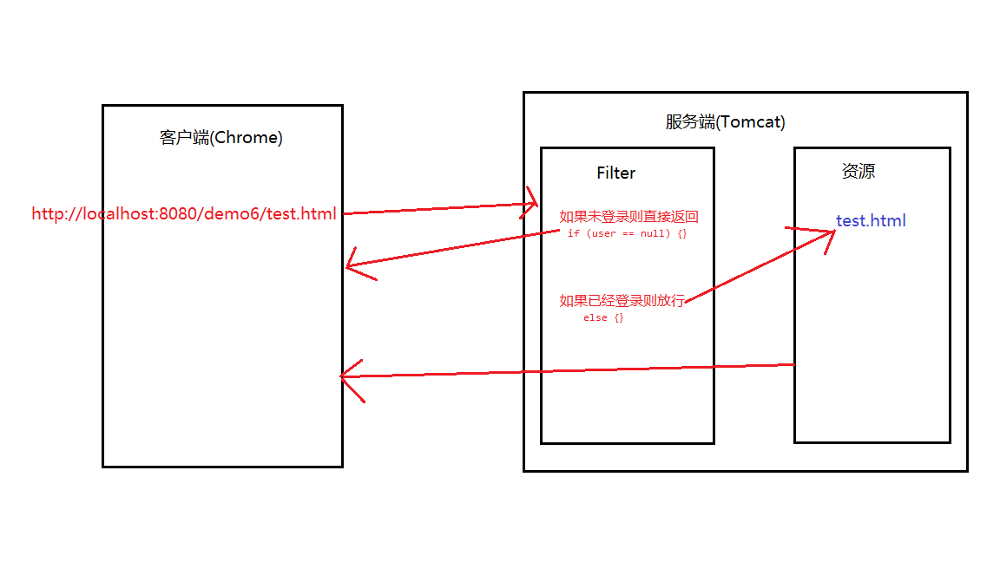
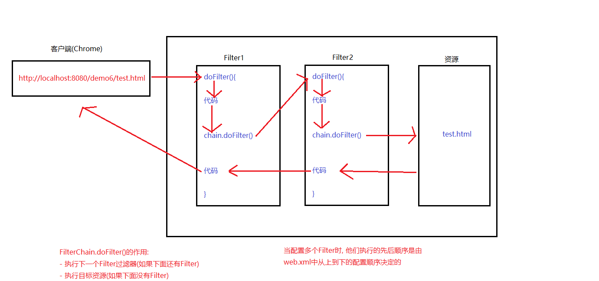

Filter
Servlet 程序、Listener 监听器、Filter 过滤器
Filter 过滤器它的作用是：拦截请求, 主要做权限检查.
当请求进来时, 先会经过filter,如果符合url-parttern, 则由fitler来处理
使用fitler实现登录校验
详细代码见javaweb/demo6

实现Filter
Filter 过滤器的使用步骤：
- 编写一个类去实现 Filter 接口
- 实现过滤方法 doFilter()
- 到 web.xml 中去配置 Filter 的拦截路径
- 精确匹配
<url-pattern>/test.html</url-pattern> - 匹配文件夹下所有
<url-pattern>/admin/*</url-pattern> - 匹配某类型资源
<url-pattern>*.html</url-pattern>
- 精确匹配
Filter的声明周期
- 构造器方法(web工程启动的时候执行)
- init 初始化方法(web工程启动的时候执行)
- doFilter 过滤方法(每次拦截到请求，就会执行)
- destroy 销毁(停止 web 工程的时候)
FilterConfig
- 获取 Filter 的名称 filter-name 的内容
- 获取在 Filter 中配置的 init-param 初始化参数
- 获取 ServletContext 对象
@Override
public void init(FilterConfig filterConfig) throws ServletException {
System.out.println("filter-name 的值是：" + filterConfig.getFilterName());
System.out.println("初始化参数 username 的值是：" + filterConfig.getInitParameter("username"));
System.out.println("初始化参数 url 的值是：" + filterConfig.getInitParameter("url"));
System.out.println(filterConfig.getServletContext());
}<filter>
<filter-name>AdminFilter</filter-name>
<filter-class>claroja.LoginFilter</filter-class>
<init-param>
<param-name>username</param-name>
<param-value>root</param-value>
</init-param>
<init-param>
<param-name>url</param-name>
<param-value>jdbc:mysql://localhost:3306/test</param-value>
</init-param>
</filter>
FilterChain

代码详细见javaweb/demo7